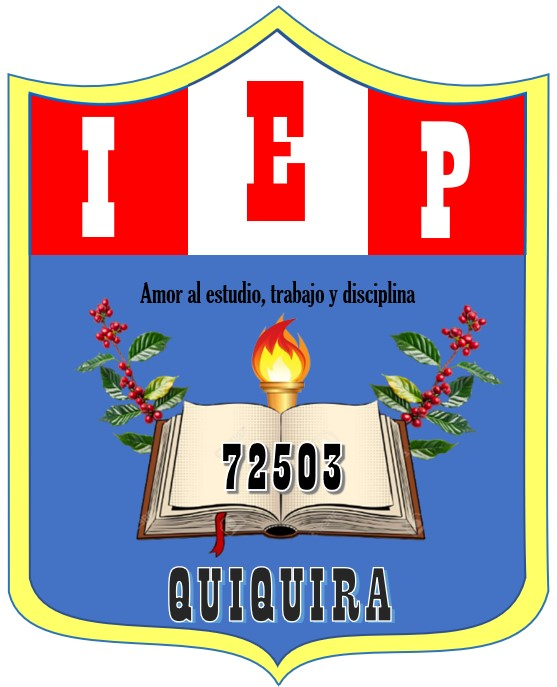

|  |
IEP N° 72503 - Quiquira |
Una educación basadas en principios filosóficos y pedagógicos, considerando los ritmos y necesidades de aprendizaje de los estudiantes.
Promover el desarrollo de habilidades para el autoaprendizaje, fomentando la autonomìa, el respeto a las diferencias y la convivencia armoniosa.
Incluir actividades para la comprensión de textos e imágenes, y desarrollar el pensamiento lógico y matemático, la comunicación, la sensibilidad, la expresiòn artística y la psicomotricidad.
© Institución Educativa Primaria Nº 72503 - Quiquira
| ¿Quiénes somos? | Sede Institucional | Contáctenos |
|
somos una Institución Educativa primaria de Educación Básica Regular (EBR) comprometidos con el desarrollo integral de nuestro estudiantes. Centro Poblado de Quiquira Distrito de Alto Inambari Provincia de Sandia Departamento de Puno Celular: 975440871 |